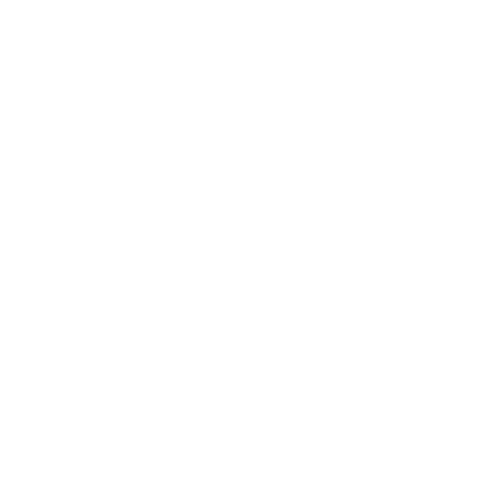

Stale
KIDs and fund pages go out of date and keep old costs and risk scores.
Espoo, Finland
Fund Anvil gives fund-shelf and product-governance teams at banks and fund platforms cited evidence on every fund they offer, from each fund’s own public documents.
Raising €1M in H1 2027.

The shelf
Most come from outside managers. Each fund carries a prospectus, a KID, an SFDR annex and periodic reports.
Every distributor’s problem
Today their own criteria (exclusions, sustainability minimums, naming rules) are checked against fund documents by hand.
Checking fund documents is manual today, so it is hard to show from evidence why each fund is on the shelf.
The hidden problem
It surfaces only at marketing review, in distributor due diligence, or when the regulator asks.
KIDs and fund pages go out of date and keep old costs and risk scores.
Costs, risk scores and holdings differ between prospectus, KID, SFDR annex and reports.
Why now
MiFID II product governance and ESMA’s 2023 guidelines require regular checks that each fund still fits its target market. Today that review is largely manual.
Sources: MiFID II, Directive 2014/65/EU, Art. 16(3) and 24(2); ESMA Guidelines on MiFID II product governance requirements (ESMA35-43-3448, 2023).
Every fund. Every review cycle.
The product
Fund Examination covers return, risk, cost, flows, holdings as published, gaps and limits. A continuous monitor for funds on a distributor’s shelf, and for managers who want their own published record inspected privately.
Disclosure Review compares the documents against each other and flags each inconsistency with a severity and the effort to resolve it. An evidence layer beside counsel, not in place of it.
Fund Examination
Six sections, with every fund compared side by side. Figures from a test on one fund manager’s public documents.
Each fund against cash and against its own benchmark, year by year.
One fund: deepest loss −56%, worst calendar year −53%, 23 months to recover.
One fund: a 1.15% ongoing charge, but 2.42% actually charged in 2025.
Four funds lost 28% of value to redemptions in a year they returned +3% to +32%.
Not one individual holding named in any audited annual report.
Which figures each fund publishes, and which none of its documents state.
Evidence from a public-document test
A full Fund Examination and a Disclosure Review, from public files only.
Each finding comes with a severity and a fix.
| Fund | A property fund |
|---|---|
| Finding | Fund page advertises an 8–10% a year return target; the KID forecasts 4.9% a year after costs; 8% and 10% are the performance-fee hurdles in the fund rules. |
| Severity | High |
| Effort | One page edit |
| Evidence | Fund page; KID p.2; fund rules §11 |
Alternatives
FE fundinfo and Morningstar store and distribute documents and data, not per-finding evidence.
Ruleguard and Deloitte OneView organise reviews. They track the process, not what is inside the documents.
Ratings terminals score funds. General AI summarises without findings you can cite.
Spreadsheets are slow, uneven and hard to evidence.
The cited consistency layer between those tools: findings anchored to the issuer’s own files, with severity and effort to resolve, as a continuous monitor.
Market
Buyers are product-governance and fund-shelf teams at banks, fund platforms and wealth managers in Europe, including the UK and Switzerland, plus fund managers and ManCos who want a private continuous monitor of their published record.
Bottom-up Europe TAM is about €160M a year (base; low about €50M, high about €430M): about 200 large shelf owners, about 1,500 mid-sized and about 4,000 smaller firms, plus about 2,000 manufacturers.
Nordics first, then DACH and Benelux, then the wider EU, selectively beyond. First goal: 3–5 design partners across shelf owners and managers. Demand is driven by MiFID II and ESMA product-governance duties to review each fund on the shelf for as long as it is sold.
Claravium estimates. TAM, SAM and SOM are annual figures.
An evidence layer beside counsel, not in place of it. Not audit, not compliance advice, not investment recommendations.
Subscription / SaaS.
The lead offer is a continuous monitor on retainer for the funds on a distributor’s shelf.
A private continuous monitor of their own published record, before distributor due diligence or document relaunches.
The path is a paid pilot, then a cohort of 3–5 design partners. Pricing is shared in conversation.
Roadmap
Nordics first, then DACH and Benelux.
Pilots with Nordic distributors and a €1M raise.
First paying Nordic customers.
Expansion to DACH and Benelux.
The ask
Angel / pre-seed.
Access
Founder, Claravium Technologies
Founder-led, with 30+ years in software architecture and infrastructure security across financial services, telecom and technology. That engineering discipline goes into Fund Anvil: every finding cites page and line in the issuer’s own public documents, outputs are versioned and reproducible, and the claim is strictly bounded — evidence, not audit, compliance advice or investment recommendations.
Focus: deepen the pain, refine the offering, sign 3–5 design partners across shelf owners and fund managers, then expand the team.
At Slush: meeting VCs, and banks, fund platforms and fund managers as prospective design partners.
Espoo, Finland